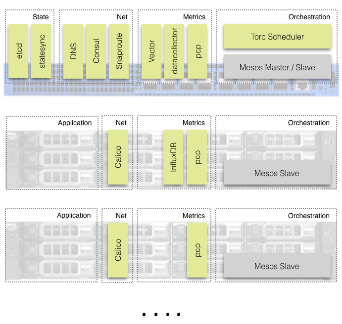

ToRC - Top of Rack Controller
Low-Latency Computing at the Edge of the Network - Applications, Services, and Network Functions controlled by a Top-of-Rack Switch.

This project should serve as a blueprint, as a reference architecture for everyone interested in controlling resources in a compute rack from its TOR switch.
We open sourced all the scripts to set it up, plus all the software pieces written by us. A detailed list of all the projects can be found in the Software / Hardware section.
And to not forget, all the code got written in a proof-of-concept context and therefore is not production-ready (yet).
Motivation
Computing at the Edge
The dynamic nature of ever increasing traffic over mobile networks requires highly reactive backends. Things like video-caching, anomaly detection, efficient bandwidth management, or even routing has to be handled much closer to the enduser, to the enduser device.
Low latency requirements of many mobile related use-cases makes every roundtrip to the central data-center inefficient or even impossible, especially for any control flows.
Micro-server in every device
In 2015 Facebook announced that they have built their own network switch. We obviously got curious about the reasons behind that decision. Luckily some insides can be found in a related blog post: "Open networking advances with Wedge and FBOSS”.
Many network operators we've spoken with share our goal of managing our networking devices and servers in the same way. With that goal in mind, we designed both Wedge and FBOSS to closely resemble server hardware and server software, which has enabled us to deploy, monitor, and control these systems alongside our servers and storage.
The disintegration in to individual dedicate hardware-components for switching and device management (BMC) allowed Facebook to use a regular off-the-shelf micro-server for the control-plane.
This Intel-based micro-server with 8gb RAM and 120gb SSD became the enabling piece for our ToRC architecture.
Build, ship, and run on any device
Docker changed the way we package, deploy, and run services. We are finally in a position where we can run the same package, the same container on a switch and a regular compute node independent of underlying Linux kernel and libraries. This simplifies and streamlines not just the deployment of services but also provides a unique opportunity to decide at run time where to place and run a service.
Metrics-driven Orchestration
Ease of Metrics Collection
Containers out of the box come with metrics (cpu, memory, network). For pretty much the first time we are able to easily collect metrics on a service level.
If we add metrics collected by the switch and metrics from the compute nodes and stream everything in to a time-series database we end up with the data needed for informed control, placement, and optimization decisions.
Orchestration - Separation of Concern
It gets easily overlooked that controlling software running on an infrastructure level is different from controlling a 3-tier web application. Therefore many of the popular container-orchestrators are too limiting and can’t be used for our use-case.
Mesos offers a unique and powerful separation between resource-management and orchestration/scheduling. Resource-management is done by Mesos and orchestration is handled by an individually implemented use-case specific scheduler, called Mesos-frameworks. Those Mesos-frameworks, like the “ToRC Scheduler”, provide a nice and easy way to encapsulate the logic needed to make informed control and placement decisions for specific use-cases and applications.
Core Concepts
A list of a few core concepts which serve as guiding principles for ToRC:
- Federation of Autonomous Racks
- Top-of-Rack Controller
- No virtualization, minimal abstraction
- Unified view across network and compute state
- Extensive collection of metrics
- Selective state replication, selective routing
- Scheduler Hierarchy, Control - Placement - Optimization
Federation of Autonomous Racks
Each rack serves as a self-contained “datacenter”. It has all the core control and network functions needed to work as an autonomous entity.
Each rack controls the visibility of its services and state.
Racks can be bundled in groups. Groups share state in an eventual consistent way.
Top-of-Rack Controller
The unique location of the Top-of-Rack switch and its importance for the whole rack makes it a perfect fit for any core controller functionality.
No virtualization, minimal abstraction
To guarantee low latency and high resource efficiency we avoid any virtualization technology like VM or Overlay Network.
Docker is used to run services and L3 routing for its networking. Each container has its own routable IP address.
Our code is written in Rust and Go. Both languages generate binary executables.
We carefully try to avoid any additional abstraction layer. Our code has to be able to benefit from each and every feature the underlying network or compute hardware offers.
Extensive collection of metrics
Realtime metrics are key for efficient orchestration. We collect system, network, and container metrics and store them in a time-series database. Each rack has its own time-series database.
Unified view across network and compute state
Each rack maintains one unified view across states of all its different services, and network and compute resources.
Selective state replication, selective routing
Only a subset of the state gets shared between racks using replication. If a scheduler decides that one of its services needs to be reachable from the other racks its route gets announced via the shared state.
Scheduler Hierarchy, Control - Placement - Optimization
We implemented a 3 layer scheduler hierarchy.
- The “ToRC Scheduler” runs on the switch and controls all the core services. It also handles all the interactions with the state database and the network-agent.
- “Sub-schedulers” are responsible for the placement of services serving a specific use-case, like the DNS example. “Sub-schedulers” provide updates to the ToRC Scheduler about the state, placement, and configuration of their services.
- “Optimizers” constantly analyze the time-series data and the state of the rack. If they find a need for optimization, like scaling up a service or shutting off a node, they will interact with the correspondent scheduler to execute on those optimizations.
Construction Sites
Please refer to Construction Sites for areas of on-going and future implementation work.